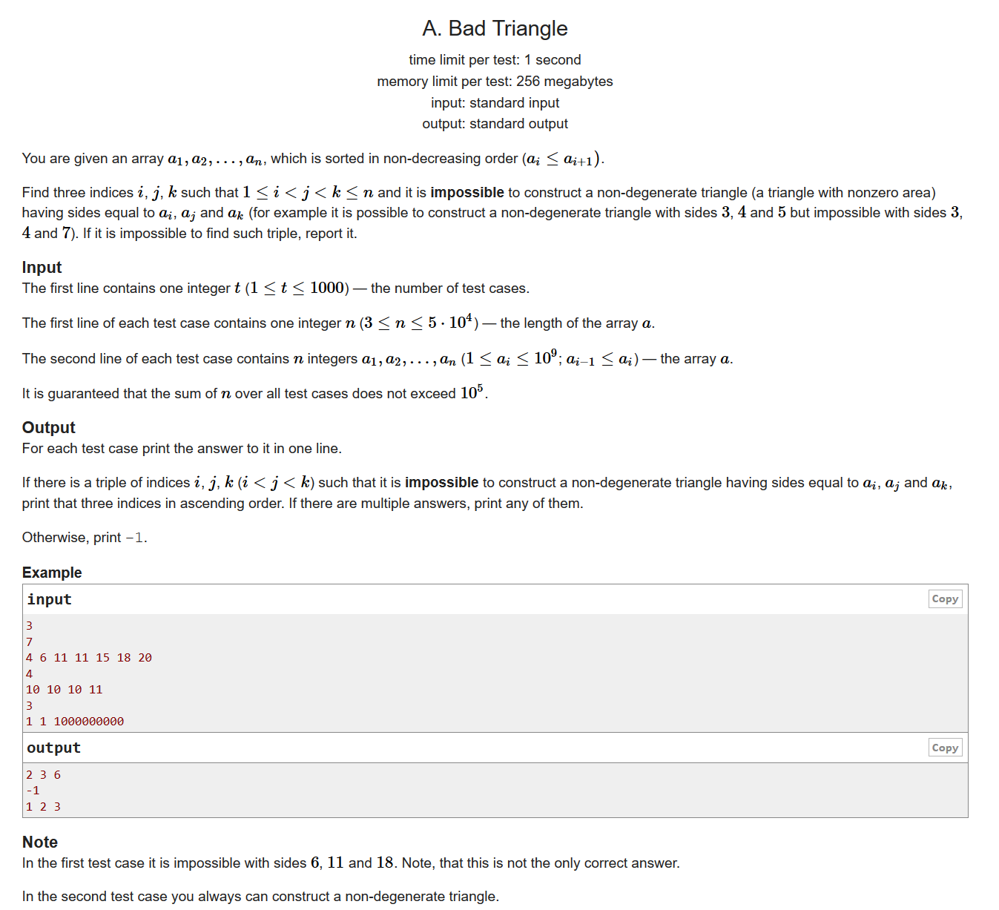
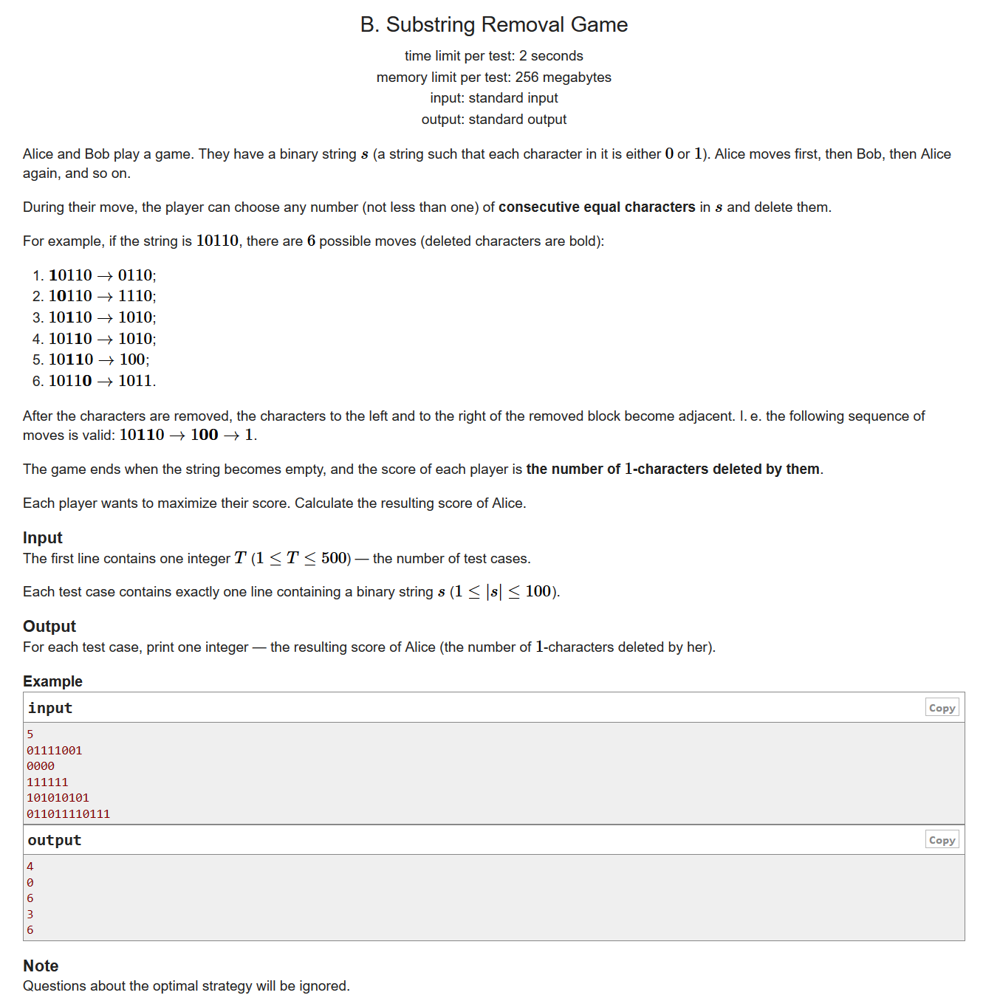
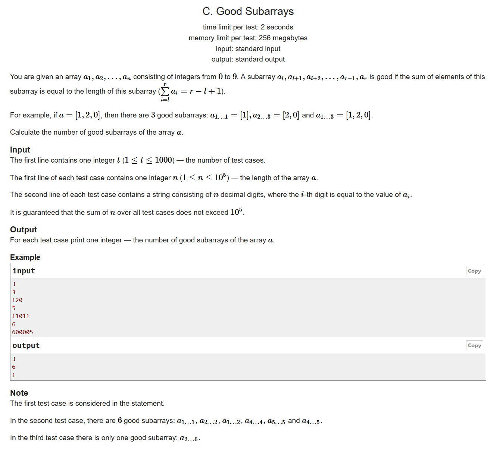
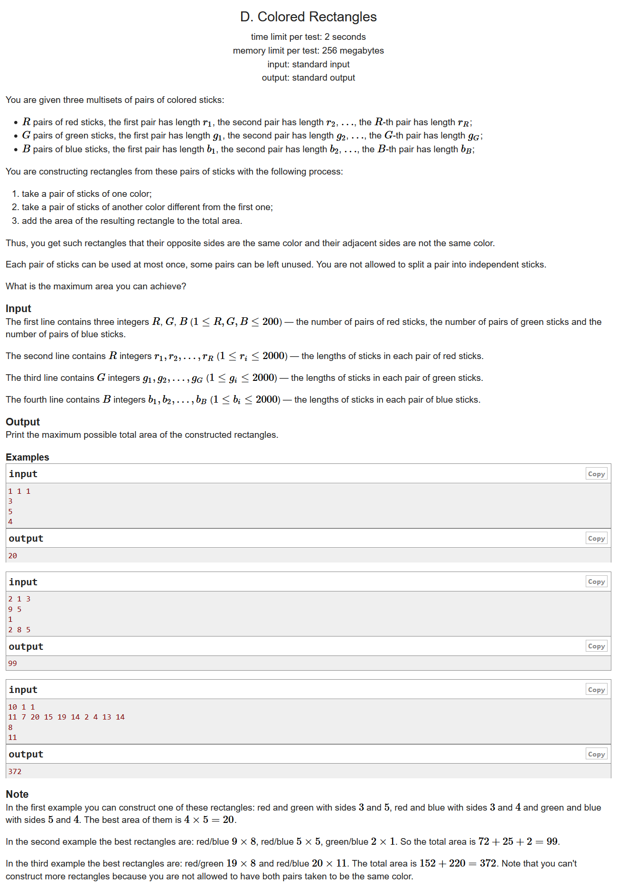
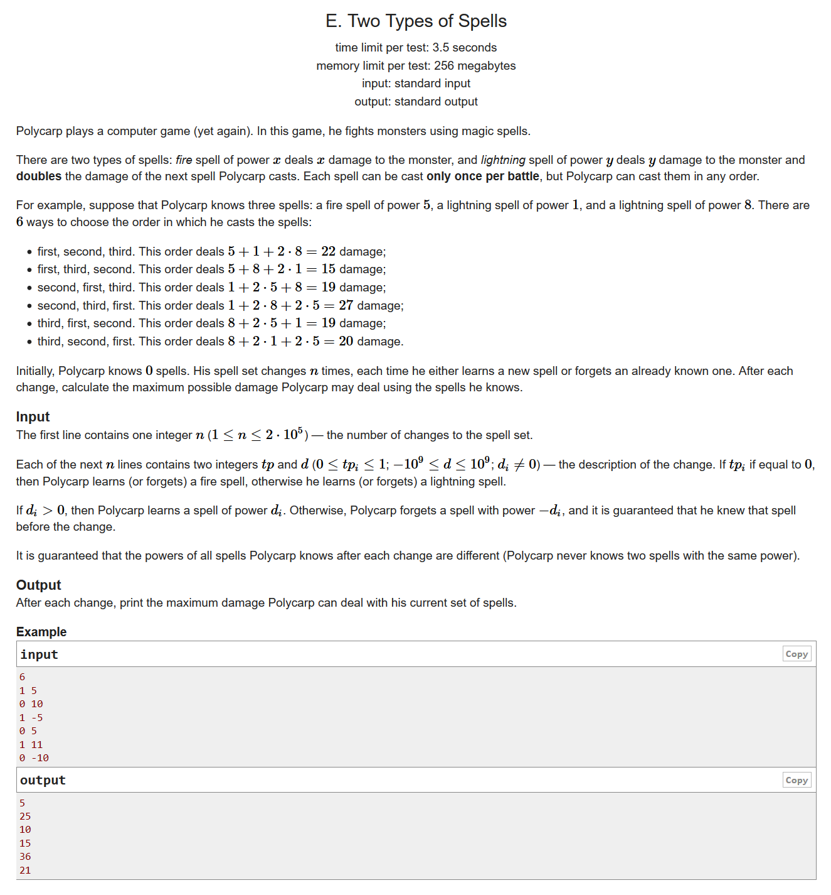
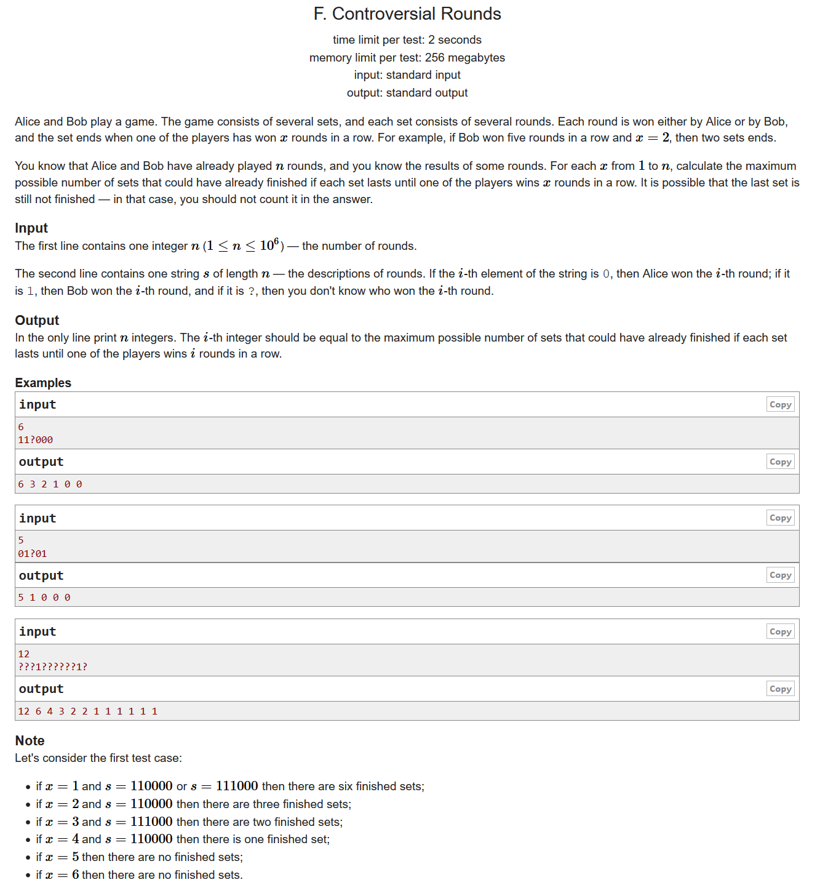

#include <bits/stdc++.h> using namespace std; #define LL long long #define sigma_size 30 #define max_size (int)(5e4+10) #define MAX (int)(1e5+7) LL a[max_size]; int main () { ios::sync_with_stdio(0); int T ; cin >> T; while ( T-- ) { int n ; cin >> n; for ( int i =1 ; i <= n ; i++ ) cin >> a[i]; if ( a[1] + a[2] <= a[n] ) { cout << "1 2 " << n << endl; } else cout << "-1" << endl; } }

#include <bits/stdc++.h> using namespace std; #define LL long long #define sigma_size 30 #define max_size (int)(1e5+10) #define MAX (int)(1e5+7) int ans[505]; int main () { ios::sync_with_stdio(0); int T ; cin >> T; for ( int cas = 1 ; cas <= T ; cas++ ) { string s; cin >> s; vector <int> p; for ( int i = 0 ; i < s.length() ; i++ ) { if ( s[i] == '0' ) continue; int cnt = 0; while ( s[i] == '1' ) { cnt++; i++; } p.push_back(cnt); } sort ( p.begin() , p.end() , greater<int>() ); int res = 0; for ( int i = 0 ; i < p.size() ; i+=2 ) res += p[i]; ans[cas] = res; } for ( int i = 1 ; i <= T ; i++ ) cout << ans[i] << endl; }

#include <bits/stdc++.h> using namespace std; #define LL long long #define sigma_size 30 #define max_size (int)(1e5+10) #define MAX (int)(1e5+7) int a[max_size]; LL C ( int x ) { return 1ll*x*(x-1)/2; } LL ans[1005]; int main () { ios::sync_with_stdio(0); int T ; cin >> T; for ( int cas = 1 ; cas <= T ; cas++ ) { int n ; cin >> n; string s; cin >> s; for ( int i = 1 ; i <= n ; i++ ) { a[i] = (int)(s[i-1]-'0'); a[i] -= 1; } for ( int i = 2 ; i <= n ; i++ ) a[i] = a[i-1] + a[i]; a[0] = 0; map <int,int> mp; for ( int i = 0 ; i <= n ; i++ ) mp[a[i]]++; LL res = 0; for ( auto it = mp.begin() ; it != mp.end() ; it++ ) res += C ( it->second ); ans[cas] = res; } for ( int i = 1 ; i <= T ; i++ ) cout << ans[i] << endl; }

dp
先对三个数列排个序，由贪心的思想可以知道，我们每次要在这个集合里面挑筷子的时候，一定是取当前最大的
用dp[i][j][k]表示当前取了i个R，j个G，k个B，那么我们很容易可以得到状态转移方程：
#include <bits/stdc++.h> using namespace std; #define LL long long #define sigma_size 30 #define max_size (int)(1e5+10) #define MAX (int)(1e5+7) int R , G , B; LL r[205] , g[205] , b[205]; LL dp[205][205][205]; int main () { ios::sync_with_stdio(0); cin >> R >> G >> B ; for ( int i = 1 ; i <= R ; i++ ) cin >> r[i]; for ( int i = 1 ; i <= G ; i++ ) cin >> g[i]; for ( int i = 1 ; i <= B ; i++ ) cin >> b[i]; sort ( r+1 , r+R+1 , greater<LL>() ); sort ( g+1 , g+G+1 , greater<LL>() ); sort ( b+1 , b+B+1 , greater<LL>() ); LL ans = 0; for ( int i = 0 ; i <= R ; i++ ) for ( int j = 0 ; j <= G ; j++ ) for ( int k = 0 ; k <= B ; k++ ) { if ( i && j ) dp[i][j][k] = max ( dp[i][j][k] , dp[i-1][j-1][k]+r[i]*g[j] ); if ( j && k ) dp[i][j][k] = max ( dp[i][j][k] , dp[i][j-1][k-1]+g[j]*b[k] ); if ( i && k ) dp[i][j][k] = max ( dp[i][j][k] , dp[i-1][j][k-1]+r[i]*b[k] ); ans = max ( ans , dp[i][j][k] ); } cout << ans << endl; }

#include <bits/stdc++.h> using namespace std; #define LL long long #define sigma_size 30 #define max_size (int)(1e6+10) #define MAX (int)(1e5+7) int n ; set <int> sd; LL sum[2]; set <int> s[2]; int cnt[2]; void update ( int id ) { assert(s[id].size() > 0); int x = *s[id].rbegin(); if ( id == 1 ) x = *s[id].begin(); bool d = sd.count(x); sum[id] -= x , sum[!id] += x; s[id].erase(x) , s[!id].insert(x); cnt[id] -= d , cnt[!id] += d; } LL ans[max_size]; int main () { ios::sync_with_stdio(0); cin >> n; for ( int i = 1 ; i <= n ; i++ ) { int tp , d; cin >> tp >> d; if ( d > 0 ) { sum[0] += d; s[0].insert(d); cnt[0] += tp; if ( tp == 1 ) sd.insert(d); } else { d = -d; int id = 0; if ( s[1].count(d) ) id = 1; else assert ( s[0].count(d) ); sum[id] -= d; s[id].erase(d); cnt[id] -= tp; if ( tp == 1 ) { assert ( sd.count(d) ); sd.erase(d); } } int sumdouble = cnt[0] + cnt[1]; while ( s[1].size() < sumdouble ) update(0); while ( s[1].size() > sumdouble ) update(1); while ( s[1].size() > 0 && s[0].size() > 0 && *s[0].rbegin() > *s[1].begin() ) { update (0); update (1); } assert ( s[1].size() == sumdouble ); LL res = sum[0] + sum[1]*2; if ( cnt[1] == sumdouble && sumdouble > 0 ) { res -= *s[1].begin(); if ( s[0].size() > 0 ) res += *s[0].rbegin(); } ans[i] = res; } for ( int i = 1 ; i <= n ; i++ ) cout << ans[i] << endl; }

#include <bits/stdc++.h> using namespace std; #define LL long long #define ULL unsigned long long #define sigma_size 30 #define max_size (int)(1e6+10) #define MAX_SIZE (int)(4e6+7) int pre[max_size][2]; int a[max_size]; char s[max_size]; int main () { ios::sync_with_stdio(0); int n ; cin >> n; cin >> s+1; for ( int i = 1 ; i <= n ; i++ ) { if ( s[i] != '?' ) a[i] = s[i] - '0'; else a[i] = 2; } for ( int i = 1 ; i <= n ; i++ ) { pre[i][1] = pre[i-1][1]; pre[i][0] = pre[i-1][0]; if ( a[i] == 2 ) continue; pre[i][a[i]] = i; } for ( int x = 1 ; x <= n ; x++ ) { int l = 1; int ans = 0; while ( l + x - 1 <= n ) { int r = l+x-1; if ( pre[l-1][1] == pre[r][1] || pre[l-1][0] == pre[r][0] ) { ans++; l = r+1; } else l = min ( pre[r][0] , pre[r][1] ) + 1; } cout << ans << " "; } cout << endl; return 0; }